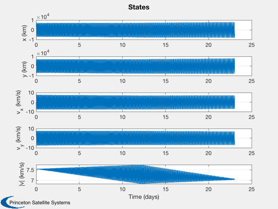
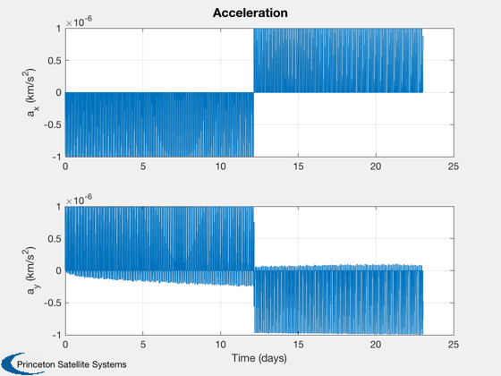
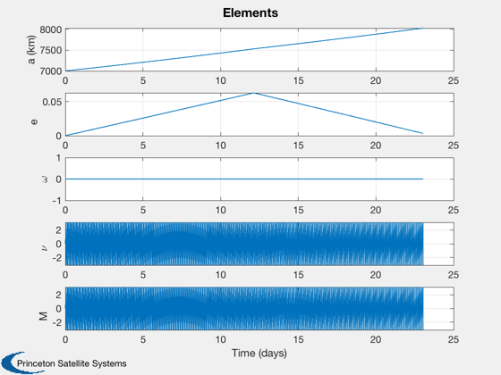
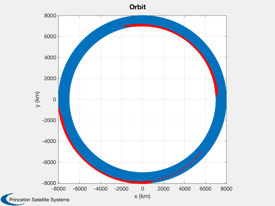

Demonstrate planar orbit raising
This is a constant acceleration model. Shows a single pulse per orbit and two pulses per orbit. The dual is analagous to a spiral transfer. Both target a given apogee and perigee radius.
This demo takes a couple of minutes to run.
Contents
See also
PlanarOrbitRaising, DisplayLatexTable
%-------------------------------------------------------------------------- % Copyright (c) 2018 Princeton Satellite Systems, Inc. % All rights reserved. %-------------------------------------------------------------------------- % Since 2018.1 %--------------------------------------------------------------------------
Get the default data structure
d = PlanarOrbitRaising;
Double impulse transfer
d.el = [7000 0 0 0 0 0]; % Initial elements [km rad] d.mu = 3.98600436e5; % Earth gravity (km^3/s^2) d.dT = 20; % Time step (s) for numerical integration d.tEnd = 1000*Period(d.el(1)); % End time used if there aren't targets d.frac = 0.25; % Fraction of period to burn d.rPTarget = 8000; % Perigee target (km) d.rATarget = 8000; % Apogee target (km) d.aMag = 1e-6; % Acceleration magnitude (km/s^2) d.type = 'theta'; % Theta means burn tangential to robit d.pattern = 'double'; % Fires 180 deg apart to cancel eccentricity changes disp('Starting two pulse integration...') tic [~,l] = PlanarOrbitRaising( d ); toc % Display the results in a latex compatible format DisplayLatexTable(l);
Starting two pulse integration...
Elapsed time is 39.804337 seconds.
Semi-Major Axis 7000.0 km
Eccentricity 0.0
Mean Anomaly 0.0 deg
$\mu$ 3.9860e+05 km$^3$/s$^2$
$\Delta T$ 20.0 s
Acceleration magnitude 1.00e-06 km/sec$^2$
Fraction of Period for Burn 0.2
Type theta
Pattern double
Duration 18.463657 days
Final apogee 8001.7 km
Final perigee 8000.1 km
Delta-V 0.488 km/s
Single impulse transfer
d.pattern = 'single'; disp('Starting single pulse integration...') tic [~,l] = PlanarOrbitRaising( d ); toc % Display the results in a latex compatible format DisplayLatexTable(l); %--------------------------------------
Starting single pulse integration...
Elapsed time is 47.852664 seconds.
Semi-Major Axis 7000.0 km
Eccentricity 0.0
Mean Anomaly 0.0 deg
$\mu$ 3.9860e+05 km$^3$/s$^2$
$\Delta T$ 20.0 s
Acceleration magnitude 1.00e-06 km/sec$^2$
Fraction of Period for Burn 0.2
Type theta
Pattern single
Duration 23.031713 days
Final apogee 8054.1 km
Final perigee 8000.1 km
Delta-V 0.499 km/s
   